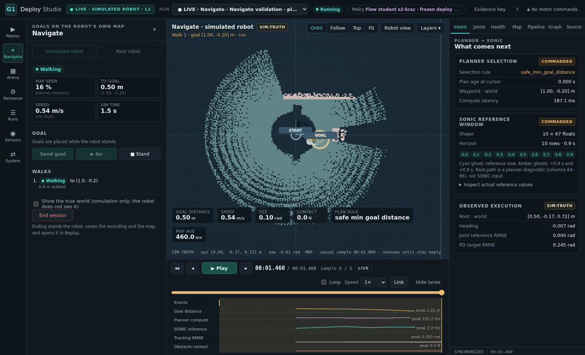
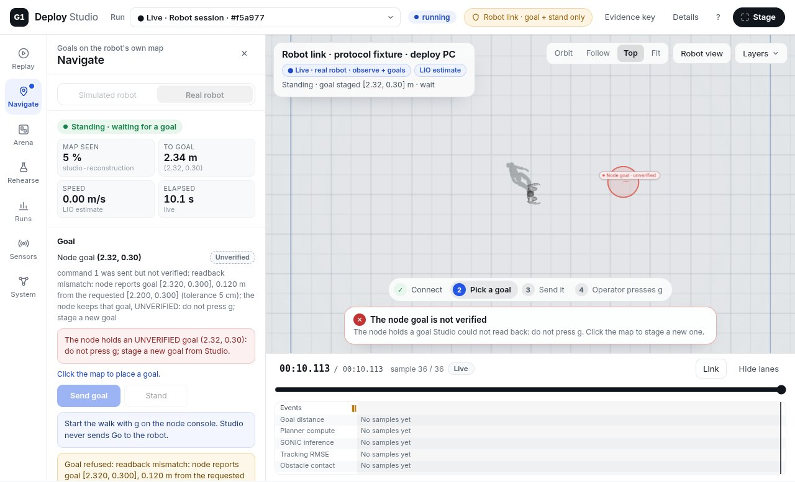
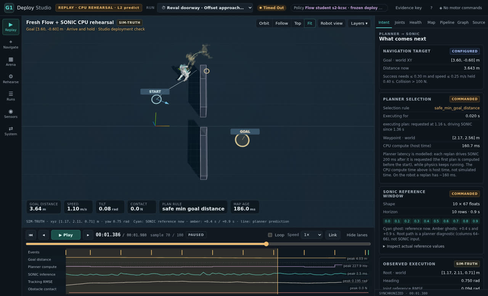

recorded walks
Five rooms. Each walk is a fresh simulated session of the deploy stack: boot at the start mark, one goal, Go, walk, stand.
Unitree G1 · learned navigation · simulation first
G1 Deploy Studio is a browser cockpit for deploying a learned navigation policy on a humanoid. It shows what the robot sees, where it plans to go and whether a goal passes Studio's checks before it is sent. It never commands a motor.
Recorded, simulated walks of the deploy stack: the frozen Flow student planner, the SONIC tracking policy and Studio's reproduction of node.py, in MuJoCo with a simulated LiDAR and the robot's deploy settings. Goals snap to recorded ones on a 0.4 m grid. What this is, and is not.
Get the highlights
Every number on this page is computed from the recordings in your browser, from the same files the demo plays.
Five rooms. Each walk is a fresh simulated session of the deploy stack: boot at the start mark, one goal, Go, walk, stand.
Arrival is node.py's rule. The site also grades contact and the final distance by simulator truth.
Studio may send a checked goal or a stand. A person presses g. Only the SONIC runner writes the motors.
Studio end to end: replay, rehearsal, the arena editor, suites, Navigate with the simulated robot and the real-robot link, and the validation behind it. Captions included.
Correction: the video says a walk starts "on the console or the remote". Only g on the node console starts it; the remote's F1 just hands the runner to the node's stream.
Take a closer look
One recorded walk on both halves, in step. Pick a scenario; drag to turn both cameras; step frame by frame.
How it works
On the robot day everything runs on the deploy PC next to the G1. Studio attaches on loopback: it listens to the streams, and it may send node.py a checked goal or a request to stand. Click a part to see what it does.
Scroll the diagram sideways to see all of it.
goal to node.py, only after the checks pass and only while the robot stands stillstand to node.pystatus requests, to read the goal backgo: the operator presses g on the node consolequit, or anything to the SONIC runnerExposure today: Studio binds only loopback, but node.py (tcp://*:5562, which accepts go and quit, and *:5556), the SONIC runner (*:5557) and the LIO bridge (*:5561) bind every interface. Proposal U3 to the deploy repository would bind node.py's two to loopback; the runner and the bridge need the same. Until then, firewall the robot network.
A day with the real robot
What deploying this suite looks like, step by step, with Studio's real pre-Go checklist. Break things with the switches and watch which check stops you. The rules and messages are the robot link's; the robot is a recorded simulated walk, shown the way Studio shows a real one: as its LIO estimate.
What rehearsing found
Running hundreds of simulated walks before a real one is the point. These came out of it. Where there is an example, it is one of the recordings in the demo.
Questions
The walks were made by the deploy stack's software: the frozen Flow student planner and the SONIC tracking policy, with Studio's reproduction of node.py's state machine, in MuJoCo with a simulated MID-360 LiDAR and the robot's deploy settings5. Your browser replays those recordings. Nothing here ran on a real robot.
A live policy in the browser would publish the SONIC release weights (NVIDIA Open Model License; the deploy repository deliberately does not redistribute them) and an export of the unpublished student planner, and download about 100 MB. Recording every reachable goal once keeps the weights on the research machine and makes the page work on a phone. Studio itself runs the stack live, locally.
node.py's rule: its own pose estimate is within 0.4 m of the goal1. That is not the whole story, so every walk is also graded by contact2 and by the final distance by simulator truth3.
Not yet. Studio's robot link is built and tested against a protocol fixture; the robot day above walks through its real checklist. Readiness checklists and parsed code are not hardware verification.
The simulator's contact force between the robot and an obstacle. A walk is flagged when it exceeds 100 N at any frame2. The node's outcome does not see contact, so most such walks still "arrive".
The reference pose SONIC is tracking at each instant: 29 joint angles and an orientation, from the plan. Its pelvis position is the planner's and SONIC never receives it, so the body can fall behind or beside it4. Turn it on in the demo with B.
Goals snap to recorded ones on a 0.4 m grid, every walk starts from the start mark, and each goal was recorded once with one seed. Spots that fail Studio's checks show why; that is what Studio would refuse to send.
Static files from GitHub Pages; nothing runs on a server. About 0.3 MB until you start something; about 1 MB for the demo (three.js, the robot, a room) and about 60 kB per walk. The video loads only when played.
Use it
The page above is a demo of one workspace. This is the tool: it runs on loopback on the deploy PC.



git clone https://github.com/linjiw/g1-deploy-studio
cd g1-deploy-studio
python3 -m venv .venv
.venv/bin/pip install -r requirements.txt
npm ci
.venv/bin/python -m studio.server --port 8790
# then open http://127.0.0.1:8790/What you get from this repository alone: the gateway, the browser app and the tests; Replay draws the robot only when a recording points at a local G1 model. Rehearsals, Navigate's simulated robot and the robot link read the deploy stack (g1-student-deploy with the Flow student bundle and the SONIC policy), which is not public. No recordings, weights or robot meshes ship with the code.